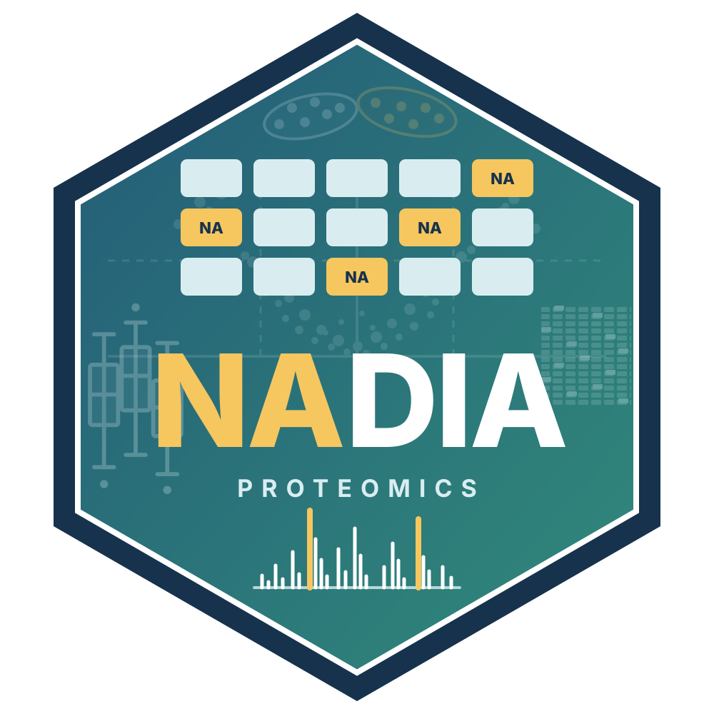

List of cluster profile plots with Highcharts
Source:R/Pattern_Profiler_Highcharts.R
cluster_profile_highchart_list.RdBuilds a list of interactive plots for all the clusters.
Usage
cluster_profile_highchart_list(
data,
conditions = NULL,
clusters = NULL,
min_membership = NULL,
show_centroid = TRUE,
centroid_summary = c("mean", "median"),
palette = NULL,
line_width = 1,
line_opacity = 0.4,
centroid_width = 3,
height = NULL
)Arguments
- data
Pattern Profiler DataFrame (LONG format)
- conditions
Vector of condition names
- clusters
Vector of clusters to plot (NULL = all)
- min_membership
Minimum membership filter
- show_centroid
Show the centroid line (default: TRUE)
- centroid_summary
Method for the centroid: "mean" or "median"
- palette
Palette for the cluster colours
- line_width
Width of the profile lines (default: 1)
- line_opacity
Opacity of the lines (default: 0.4)
- centroid_width
Width of the centroid line (default: 3)
- height
Height of each plot in pixels
Examples
if (requireNamespace("Mfuzz", quietly = TRUE) &&
requireNamespace("e1071", quietly = TRUE)) {
data(nadia_dia)
res <- process_proteomics(nadia_dia, verbose = FALSE)
pp <- pattern_profiler_analysis(res$se_proc, res$DEPs_results,
assay_name = "Impseqrob_min",
auto_select_c = FALSE, c = 3,
verbose = FALSE)
hc_profiles <- cluster_profile_highchart_list(pp$long_output,
conditions = c("A", "B", "D"))
print(names(hc_profiles))
}
#> [1] "Cluster_1" "Cluster_2" "Cluster_3"